Noleggio

Ski System è un noleggio in grado di offrire un’ampia gamma di sci e accessori delle migliori marche per soddisfare le esigenze di ogni sciatore, anche il più esigente e preparato. Un parco sci costantemente rinnovato e mantenuto in
condizioni sempre ottimali grazie all’annesso laboratorio.
vedi tariffe 2020/2021 ↧
Atomic S9 →
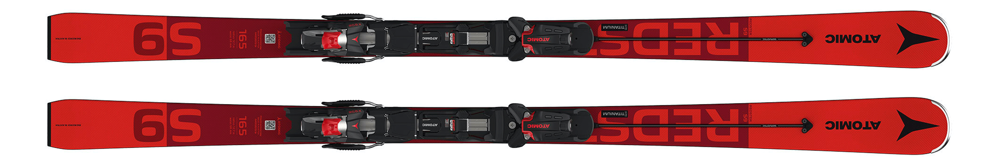
L’Atomic Redster S9 FIS M è un vero sci da slalom. Ha grande robustezza e una nuova e velocissima soletta ‘Crystal Race’ adottata con successo da Marcel Hirscher sugli sci da Coppa del Mondo. La costruzione sandwich e la struttura Full Sidewall con inserti in titanio danno a questo sci un flex armonioso e permette di trasferire tutta l’energia alle lamine per una presa di spigolo efficace. La larghezza e la lunghezza di questo modello favoriscono il carving istantaneo e ottimizzano l’agilità per inversioni di spigolo rapidissime tra i pali snodati. Il doppio rivestimento sotto l’attacco riduce al minimo l’attrito. È il meglio per la Coppa del Mondo, la Coppa Europa, le gare FIS e il circuito Master.
The Atomic Redster S9 FIS M is a true slalom ski. It has great robustness and a new, super-fast 'Crystal Race' base, which Marcel Hirscher has successfully used on his World Cup skis. Sandwich construction and Full Sidewall construction with titanium inserts give this ski a harmonious flex and allow all energy to be transferred to the edges for effective edge grip. The width and length of this model promote instant carving and optimise Double coating under the binding minimises friction. It's the best for World Cup, European Cup, FIS races and the Master circuit.
165 cm
Atomic
2020/2021
https://shop.atomic.com/it-it/products/redster-s9-fis-m-x-16-var-aa2813.html
Atomic G9 →
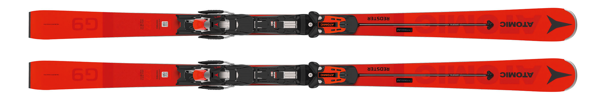
L’Atomic Redster G9 RS offre velocità e stabilità per agonisti GS a tutti i livelli. È dotato della nostra ultima innovazione per le gare, Servotec. Il nome deriva da “Servolenkung” (servosterzo) perché è proprio di questo che si tratta: una virata curva potente per i tuoi sci. La piastra pre-tensionata pre-stressata e l’elastomero sulla superficie dello sci ne supportano il comportamento in virata curva a qualsiasi velocità, rendendo lo sci la virata più agile nelle curve e più stabile nei percorsi rettilinei. Presenta una costruzione Full Sidewall. Esso inoltre non è vincolato da regole FIS, così presenta un raggio curva inferiore per renderlo super gestibile e in grado di perdonare eventuali errori. Se sei uno sciatore “cross” o atleta Master è stai cercando performance di Coppa del Mondo qui le hai trovate.
The Atomic Redster G9 RS offers speed and stability for GS racers of all levels. It features our latest innovation for racing, the Servotec. The name comes from "Servolenkung" (power steering) because that's what it's all about: a powerful turn for your skis. The pre-stressed pre-tensioned plate and elastomer on the surface of the ski support its cornering behaviour at any speed, making the ski more agile in turns and more stable on straight runs. It features a full sidewall construction. It is also not bound by FIS rules, so it has a smaller turn radius to make it super manageable and forgiving of mistakes. If you are an XC skier or Master athlete and are looking for World Cup performance, you have found it here.
171-177-183 cm
Atomic
2020/2021
https://shop.atomic.com/it-it/products/redster-g9-rs-x-16-var-aa2851.html
Hero Elite ST Ti→
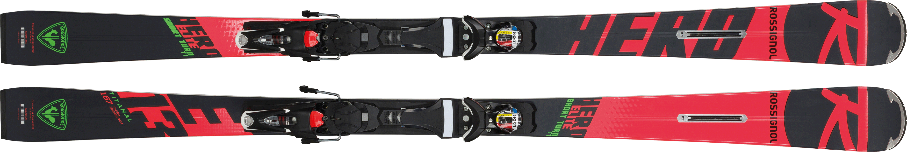
L’ultimissimo Hero Elite ST Ti, direttamente ispirato a uno sci da slalom da competizione farà felici gli sciatori tecnici amanti delle gare. La rivoluzionaria tecnologia Line Control abbinata a una larghezza di 68 mm in corrispondenza dell’appoggio del piede e a un arco breve rappresentano una garanzia di precisione, potenza e rapidità nel passaggio da spigolo a spigolo. La tecnologia LCT regala allo sci la massima stabilità, consentendo un costante controllo direzionale unico e una scelta ottimale della traiettoria.
The latest Hero Elite ST Ti, directly inspired by a competition slalom ski, will delight technical race skiers. The revolutionary Line Control technology combined with a 68mm width at the foot stance and a short arc guarantee precision, power and fast edge-to-edge transition. LCT technology gives the ski maximum stability, enabling unique directional control and optimal trajectory choice.
...
Rossignol
2018/2019
https://www.rossignol.com/it/rossignol-hero-elite-st-ti-konect-skis-sci-rahla02-000-2018-2019.html
Hero Elite LT Ti→
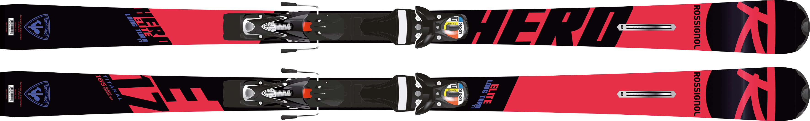
L’ultimissimo Hero Elite LT Ti, direttamente ispirato a uno sci da gigante, farà felici gli sciatori con buona tecnica amanti delle competizioni. La rivoluzionaria tecnologia Line Control abbinata a una larghezza centrale di 71 mm e a un arco ampio sono garanzie di precisione, potenza e rapidità nel passaggio da spigolo a spigolo. La tecnologia LCT regala allo sci la massima stabilità, consentendo un costante controllo direzionale unico e una scelta ottimale della traiettoria.
The latest Hero Elite LT Ti, directly inspired by a giant slalom ski, will appeal to competition-minded skiers with good technique. Revolutionary Line Control technology combined with a 71mm waist width and a wide arc guarantee precision, power and fast edge-to-edge transition. LCT technology gives the ski maximum stability, enabling unique directional control and optimal trajectory choice.
...
Rossignol
2018/2019
https://www.rossignol.com/it/rossignol-hero-elite-lt-ti-konect-skis-sci-rahlc01-000-2018-2019.html#product-info-description
Hero Master→
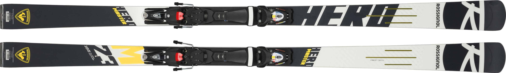
Costruito per chi condivide la nostra passione per la gara, il nuovo sci Hero Master Race presenta innovazioni approvate in Coppa del Mondo per prestazioni impegnate e competitive. La nostra struttura vincente e pronta per la gara si unisce alla tecnologia Prop Tech per ottimizzare la precisione, l'equilibrio e il trasferimento di potenza. La tecnologia Prop Tech fornisce un flex torsionale adattivo per un migliore contatto della lamina, un controllo più preciso e traiettorie più veloci e aggressive.
Built for those who share our passion for racing, the new Hero Master Race ski features World Cup-approved innovations for committed, competitive performance. Our race-ready, winning construction combines with Prop Tech technology to optimise precision, balance and power transfer. Prop Tech technology provides adaptive torsional flex for better edge contact, more precise control and faster, more aggressive trajectories.
...
Rossignol
2019/2020
https://www.rossignol.com/it/rossignol-hero-master-r22-wc-skis-sci-rahdb01-000-2019-2020.html#tab-label-product-info-description-title
Dobermann Spitfire PRO→
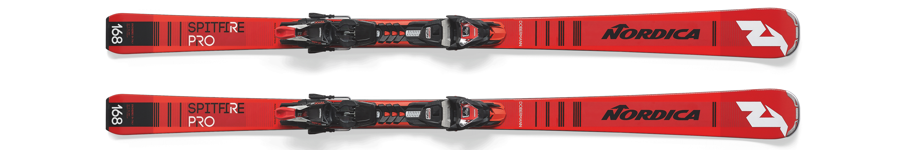
Fluido e preciso, lo Spitfire PRO è uno sci da pista che combina alla perfezione sia potenza che divertimento. Come lo Spitfire RB, questi sci sono costruiti con un’anima in legno e due strati di Titanal, rendendolo fluido e vivace. Tuttavia lo Spitfire Pro è costruito senza Carbon Race Bridge, rendendo questo sci più facile sia in ingresso che in uscita di curva. L’enfatizzata punta da SL consente di impostare curve rapide e strette mentre le geometrie centrali e la coda da GS rendono lo sci leggero pur mantenendo una incredibile rigidità torsionale, che consente una presa di spigolo eccellente anche sulle superfici più ghiacciate. A legare tutto insieme ci pensa la nuova piastra Recoil Power Plate che rende incredibilmente armonica la flessione dello sci, incrementando così potenza e stabilità. Per chi cerca uno sci da pista ad alte prestazioni, un po’ più facile dello Spitfire RB, il Pro è la scelta giusta.
Smooth and precise, the Spitfire PRO is a piste ski that perfectly combines both power and fun. Like the Spitfire RB, these skis are built with a woodcore and two layers of Titanal, making it smooth and lively. However, the Spitfire Pro is built without a Carbon Race Bridge, making this ski easier both on and off the turn. The emphasised SL tip allows you to set fast, tight turns while the central geometry and GS tail make the ski lightweight while maintaining incredible torsional stiffness, which allows excellent edge grip even on the most icy surfaces. Tying it all together is the new Recoil Power Plate, which makes the ski's flex incredibly harmonious, thereby increasing power and stability. If you're looking for a high-performance piste ski which is a little easier than the Spitfire RB, the Pro is the right choice.
180-174-168-162-156 cm
Nordica
2018-2019
https://www.nordica.com/italia/sci/uomo/on-piste/dobermann-spitfire-it/dobermann-spitfire-pro-fdt/
Dobermann Spitfire CRX→
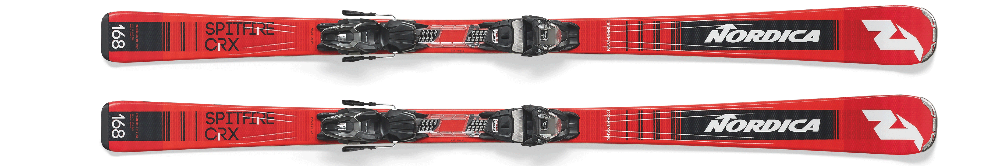
Sci Nordica Spitfire Crx Evo fornisce velocità e controllo grazie ad un design altamente innovativo che combina il corpo GS con una punta slalom.
Nordica Spitfire Crx Evo skis provide speed and control thanks to a highly innovative design that combines the GS body with a slalom tip.
...
Nordica
2019-2020
https://www.sportlifee.it/sci-usati/sci-usato-nordica-dobermann-spitfire-crx-2019-adulto-rosso.html
Dobermann SLC→
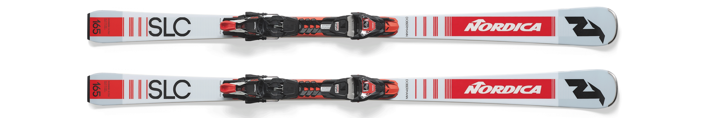
Lo sci più facile della famiglia Spitfire, Dobermann SLC è stato perfettamente progettato per coloro i quali amano tracciare archi senza troppa fatica. Naturalmente dotato di un carattere dalle alte prestazioni, ma costruito con anima in legno senza strati di Titanal, è più leggero e meno impegnativo, ideale per gli sciatori meno aggressivi. la sua geometria multi-raggio, insieme alla punta da SL enfatizzata assicura un’entrata di curva semplice e agile, mentre il centro da GS consente una totale libertà di poter fare praticamente tutto, dagli archi di curva ampi alle serpentine più strette. Inoltre la nuova piastra Recoil Power Plate assicura una flessione dello sci armoniosa insieme a un’eccellente stabilità. Se state cercando uno sci divertente e semplice da gestire, Spitfire SLC è lo sci che fa per te.
The easiest ski in the Spitfire family, the Dobermann SLC is perfectly designed for those who like to carve arcs without too much effort. Naturally equipped with a high-performance character, but built with a woodcore without Titanal layers, it is lighter and less demanding, ideal for less aggressive skiers. Its multi-radius geometry combined with the emphasised SL tip ensures easy and agile turn entry, while the GS centre allows total freedom to do just about anything, from sweeping arcs to narrower serpentines. In addition, the new Recoil Power Plate ensures harmonious ski flex combined with excellent stability. If you're looking for a ski that's fun and easy to handle, the Spitfire SLC is the ski for you.
170-165-160-155 cm
Nordica
2018-2019
https://www.nordica.com/italia/sci/uomo/on-piste/dobermann-it/dobermann-slc-fdt/
Racetiger SL→
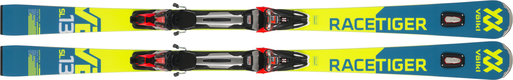
Il Racetiger SL è la prima scelta per ogni aspirante alle gare quando la discesa è caratterizzata da curve ultra-veloci, strette e radicali. Lo sci Tip Rocker, estremamente agile, offre una ricca presa grazie all'anima in legno Speedwall Multi Layer con materiale extra duro direttamente dietro la guancia laterale. La larghezza di 68 mm e il sistema di attacchi rMotion 2 con Grip Walk promettono un'ottima curva, l'UVO nella lama assicura la necessaria scorrevolezza.
The Racetiger SL is the first choice for any race aspirant when the descent is marked by ultra-fast, tight and radical turns. The extremely agile Tip Rocker Ski offers a rich grip thanks to the Speedwall Multi Layer wood core with extra-hard material directly behind the side cheek. 68 mm width and the rMotion 2 binding system with Grip Walk promise excellent cornering, the UVO in the blade ensures the necessary smooth running.
170-165-160-155-150 cm
Voelkl
2018-2019
https://www.voelkl.com/it/prodotti/sci/racing/racetiger-sl-2990/
Racetiger GS→
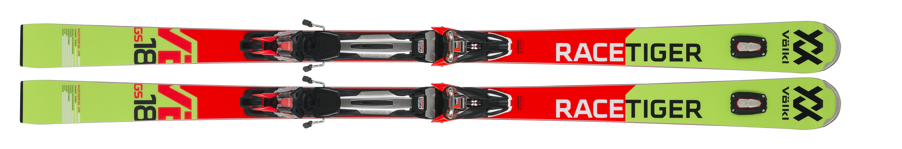
La versione di nuova concezione del Racetiger GS con 3D.Glass è ora disponibile in 4 diverse lunghezze . La grande pressione sugli spigoli si ottiene grazie agli inserti in titanio, l’anima Speedwall in legno multistrato con lo strato di legno extra-duro posizionato subito dietro il fianchetto. Una larghezza di 69mm sotto il piede, gli attacchi rMotion2 compatibili con GripWalk garantiscono massima tenuta nelle curve, mentre UVO 3D è sinonimo di sciata tranquilla.
The newly developed version of the Racetiger GS with 3D.Glass is now available in 4 different lengths. Great edge pressure is achieved thanks to titanium inserts, the Speedwall core made of multilayer wood with the extra-hard wood layer positioned just behind the sidewall. A width of 69mm underfoot, GripWalk-compatible rMotion2 bindings ensure maximum grip in turns, while UVO 3D stands for smooth skiing.
185-180-175-170 cm
Voelkl
2018-2019
https://www.voelkl.com/it/prodotti/sci/racing/racetiger-gs-2974/
Racetiger RC→
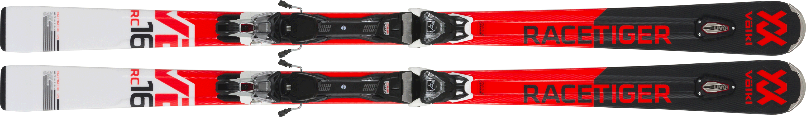
Il modello base dello sci da slalom gigante con anima in legno Full Sidewall e Full Sensor. Il nuovissimo attacco vMotion3 compatibile con GripWalk aggiunge un fantastico trasferimento di potenza a questo sci con rocker in punta che ama la velocità.
The entry-level model of the giant slalom ski with Full Sidewall and Full Sensor woodcore. The all-new GripWalk compatible vMotion3 binding adds fantastic power transfer to this speed-loving tip rocker ski.
165-170-175-180 cm
Voelkl
2018-2019
https://www.voelkl.com/en/produkte/skis/racing/racetiger-rc/
RC4 The Curv DTX→
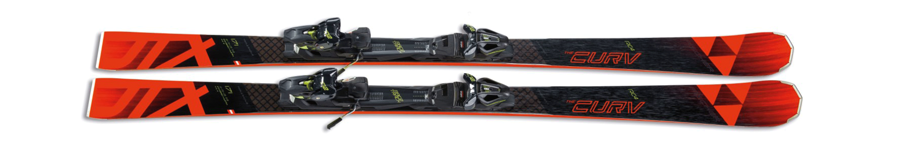
Sensazioni da gara molto ricercate: ottimo dinamismo in curva grazie a Diagotex TM, alla costruzione Triple Radius e alla base gialla da Coppa del Mondo con finiture da gara originali. Grazie ai rinforzi in Titanal di 0.8 mm, questo sci è progettato per sciatori esperti che cercano sempre il massimo dai propri sci, per spingersi al limite delle prestazioni.
Highly sought-after race feel: excellent dynamism in turns thanks to DiagotexTM, Triple Radius construction and a yellow World Cup base with original race trim. Thanks to 0.8 mm Titanal reinforcements, this ski is designed for expert skiers who are always looking to push the limits of performance.
...
Fischer
2018/2019
https://www.fischersports.com/it_it/rc4-the-curv-dtx-21607
RC4 The Curv Ti→
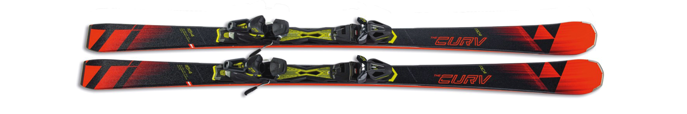
Con costruzione Triple Radius questo sci offre controllo e entrata perfetta in ogni curva. Rinforzo in Titanal di 0.5 mm assicura massima stabilità anche in caso di forte pressione. Questo sci garantisce un’entrata in curva armoniosa, ma anche ottima reattività grazie alla On-Piste ROCKER e al Triple Radius.
With Triple Radius construction this ski offers control and perfect entry into every turn. The 0.5 mm Titanal reinforcement ensures maximum stability even under heavy pressure. The On-Piste ROCKER and Triple Radius construction ensure harmonious entry into turns and optimum responsiveness.
...
Fischer
2018/2019
https://www.fischersports.com/it_it/rc4-the-curv-ti-21608
RC4 WC RC→
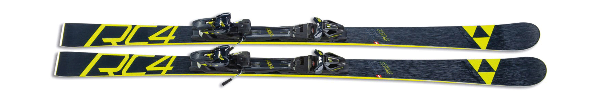
Sci da slalom gigante ad alte prestazioni. La nuova costruzione della pala ha una maggiore rigidità per curve più veloci e dinamiche. La tecnologia Hole Ski riduce il peso per una maggiore scorrevolezza e agilità.
High performance Giant Slalom ski. New shovel construction has greater stiffness for faster, more dynamic turns. Hole Ski technology reduces weight for improved smoothness and agility.
...
Fischer
2020/2021
https://www.fischersports.com/it_it/rc4-wc-rc-mt-rc4-z12-pr-1951
RC4 WC SC→
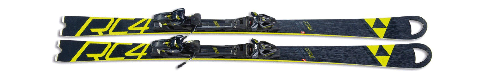
Prestazioni fantastiche nelle curve strette. La nuova costruzione della pala ha una maggiore rigidità per curve più veloci e dinamiche. La tecnologia Hole Ski riduce il peso e le vibrazioni per una maggiore scorrevolezza e agilità.
Fantastic performance in tight turns. New shovel construction has greater stiffness for faster, more dynamic turns. Hole Ski technology reduces weight and vibrations for improved smoothness and agility.
...
Fischer
2020/2021
https://www.fischersports.com/it_it/rc4-wc-sc-mt-rc4-z12-pr-1954
RC4 AR→
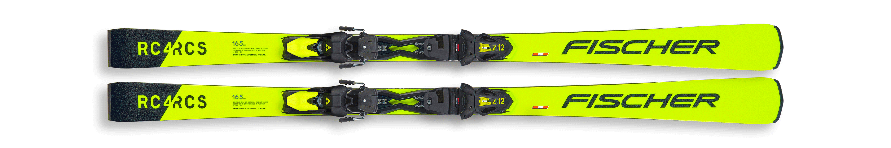
Sci da gara multidisciplinari per curve grandi o strette per sciatori esigenti. La forma a pala e la costruzione dello sci permettono curve morbide e di raggio medio con un'eccellente presa di spigolo.
Multi-discipline racing ski for big or tight turns for demanding skiers. The shovel shape and construction of the ski allow smooth, mid-size radius turns with excellent edge grip.
...
Fischer
2020/2021
https://www.fischersports.com/it_it/rc4-rcs-ar-rc4-z12-pr-1944
Firebird WRC→
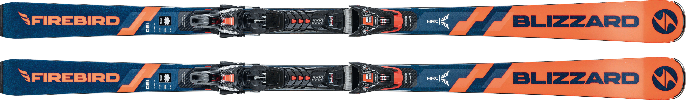
Per gli sciatori che amano il raggio lungo e le curve ad alta velocità, il WRC è l'alleato preferito nella linea Blizzard Firebird, costruito con così tanta potenza che vorresti allacciare la cintura di sicurezza. Questi sci da gara combinano un'attitudine rock 'n' roll con l'ingegneria austriaca, concepita per precisione, stabilità e velocità a tutto gas. La magia della costruzione del WRC è data dalle due tecnologie a base di carbonio (C-Spine e C-Armor), che insieme al doppio strato in Titanal e alla costruzione Sandwich Compound Sidewall, portano ad ottenere uno sci reattivo che sa di poter essere ben manovrato da chi lo conduce. Questo modello è già dotato di attacchi Marker XCELL 14. Che tu stia sciando per puro divertimento o per lasciare il segno sulla neve con fantastiche curve da gigante, il WRC è l’arma ad alte prestazioni che vorrai usare. Sciatori, scaldate i motori.
For skiers who enjoy long radius and high-speed turns, the WRC is the preferred ally in the Blizzard Firebird line, built with so much power you'll want to fasten your seatbelt. These race skis combine a rock 'n' roll attitude with Austrian engineering designed for precision, stability and full-throttle speed. The magic of the WRC's construction lies in its two carbon-based technologies (C-Spine and C-Armor), which, together with the double layer of Titanal and Sandwich Compound Sidewall construction, result in a responsive ski that knows it can be handled well by the driver. This model is already equipped with Marker XCELL 14 bindings. Whether you're skiing for pure fun or to make your mark on the snow with fantastic giant turns, the WRC is the high-performance weapon you'll want to use. Skiers, warm up your engines.
185-180-175-170 cm
Blizzard
2020/2021
https://www.blizzard-tecnica.com/it/it/men/racing/skis/firebird-wrc-xcell-14-demo
Firebird SRC→
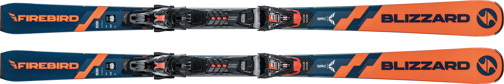
Il Blizzard Firebird SRC è stato progettato per una cosa ben precisa: tirare curve rapide e brevi a tutto gas. Combina un'attitudine rock 'n'roll con l'ingegneria austriaca, perfettamente concepita per precisione, stabilità e rapidità da spigolo a spigolo. La magia del rivestimento del SRC è data dalle due tecnologie a base di carbonio (C-Spine e C-Armor), che insieme al doppio strato in Titanal e alla costruzione Sandwich Compound Sidewall, portano ad ottenere uno sci reattivo che sa di poter essere ben manovrato da chi lo conduce. Questo modello è già dotato di attacchi Marker XCELL 14. Che tu stia sciando per puro divertimento o per lasciare il segno sulla neve con fantastiche curve da gigante, il SRC è l’arma ad alte prestazioni che vorrai usare. Sciatori, scaldate i motori.
The Blizzard Firebird SRC has been designed for one thing in particular: fast, short turns at full throttle. It combines a rock 'n' roll attitude with Austrian engineering, perfectly designed for precision, stability and speed from edge to edge. The magic of the SRC's coating comes from its two carbon-based technologies (C-Spine and C-Armor), which together with the Titanal double layer and Sandwich Compound Sidewall construction, result in a responsive ski that knows it can be handled well by the rider. This model is already equipped with Marker XCELL 14 bindings. Whether you're skiing for pure fun or to make your mark on the snow with fantastic giant turns, the SRC is the high-performance weapon you'll want to use. Skiers, warm up your engines.
170-165-160-155 cm
Blizzard
2020/2021
https://www.blizzard-tecnica.com/it/it/men/racing/skis/firebird-src-xcell-14-demo
Firebird HRC→
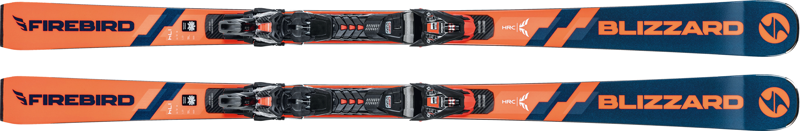
L'HRC è il modello top di gamma della linea Firebird. La sciancratura multi-raggio permette di tenersi aperte tutte le opzioni, dalle facili curve dal raggio corto a quelle da giganti a tutto gas, rendendolo così l’arma perfetta per attaccare la montagna come più ti piace. La magia della costruzione dell'HRC è data dalle due tecnologie a base di carbonio (C-Spine e C-Armor), che insieme al doppio strato in Titanal e alla costruzione Sandwich Compound Sidewall, portano ad ottenere uno sci reattivo che sa di poter essere ben manovrato da chi lo conduce. Questo modello è già dotato di attacchi Marker XCELL 14. Che tu stia sciando per puro divertimento o per lasciare il segno sulla neve con fantastiche curve da gigante, l’HRC è l’arma ad alte prestazioni che vorrai usare. Sciatori, scaldate i motori.
The HRC is the top-of-the-line model in the Firebird line. The multi-radius sidecut allows you to keep all your options open, from easy short radius turns to full-throttle giant turns, making it the perfect weapon to attack the mountain the way you want to. The magic of the HRC's construction lies in its two carbon-based technologies (C-Spine and C-Armor), which, together with the double layer of Titanal and Sandwich Compound Sidewall construction, result in a responsive ski that knows it can be handled well by its owner. This model is already equipped with Marker XCELL 14 bindings. Whether you're skiing for pure fun or making your mark on the snow with fantastic giant turns, the HRC is the high-performance weapon you'll want to use. Skiers, warm up your engines.
158-166-174-182 cm
Blizzard
2020/2021
https://www.blizzard-tecnica.com/it/it/men/racing/skis/firebird-hrc-xcell-14-demo
Firebird WRC→
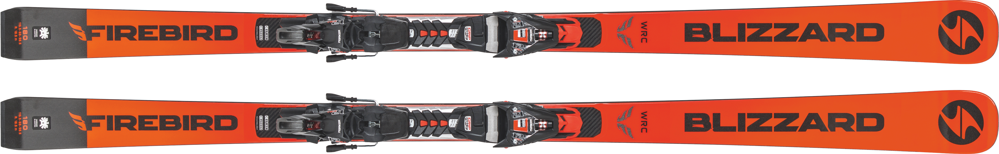
Lo sci Blizzard FIREBIRD WRC con attacco XCELL12 è un modello da Gigante estremamente stabile, adatto a realizzare curve ad ampio raggio e costruito appositamente per sciatori esperti che cercano prestazioni di altissimo livello. Questo modello race è prodotto con la costruzione C-Spine, un’anima in legno con strati in carbonio collocati verticalmente da punta a coda nella zona centrale dello sci, capace di garantire una risposta estremamente precisa nei cambi di direzione.
Completano il modello la costruzione C-Armour caratterizzata da uno strato di fibre di carbonio, collocate nella parte centrale dello sci sopra lo strato superficiale in Titanal, in grado di donare potenza, stabilita e controllo ineguagliabili. Inoltre il profilo Full camber garantirà al prodotto un controllo più preciso sulle superfici più dure. Lo sci Blizzard FIREBIRD WRC con attacco XCELL12 è il prodotto top di gamma della linea Firebird, nato per garantire velocità e stabilità.
The Blizzard FIREBIRD WRC with XCELL12 binding is an extremely stable Giant Slalom model, suitable for wide-radius turns and built specifically for expert skiers looking for top-level performance. This race model is produced using the C-Spine construction, a woodcore with carbon layers placed vertically from tip to tail in the central area of the ski, which ensures an extremely precise response when changing direction.
The C-Armour construction features a layer of carbon fibres in the central part of the ski above the Titanal surface layer, providing unrivalled power, stability and control. In addition, the full camber profile gives the product more precise control on the hardest surfaces. The Blizzard FIREBIRD WRC with XCELL12 binding is the top of the line Firebird ski, designed for speed and stability.
185-180-175-170 cm
Blizzard
2018/2019
https://www.blizzard-tecnica.com/it/it/men/racing/skis/firebird-wrc-xcell-14-demo
Firebird SRC→
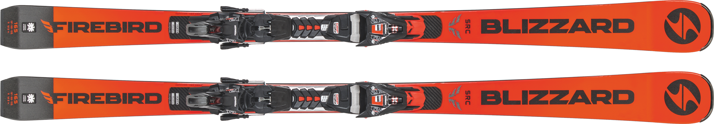
Blizzard Firebird SRC è il modello top di gamma della linea Firebird: uno spirito rock che sembra nato per la velocità. Lo sci perfetto per chiunque sia alla ricerca di un prodotto preciso ed estremamente stabile, adatto alle curve ad ampio raggio e ad alta velocità. SRC è costruito impiegando due tecnologie a base di carbonio (C-Spine e C-Armor), oltre al doppio strato in Titanal e alla costruzione Sandwich Compound Sidewall, per una sciata da sogno.
The Blizzard Firebird SRC is the top-of-the-range model in the Firebird line: a rockin' spirit that feels like it was born for speed. The perfect ski for anyone looking for a precise and extremely stable product suitable for wide-radius, high-speed turns. The SRC is built using two carbon-based technologies (C-Spine and C-Armor), as well as double-layer Titanal and Sandwich Compound Sidewall construction, for dream skiing.
185-180-175-170 cm
Blizzard
2018/2019
https://www.blizzard-tecnica.com/it/it/men/racing/skis/firebird-src-xcell-14-demo
Firebird CA→
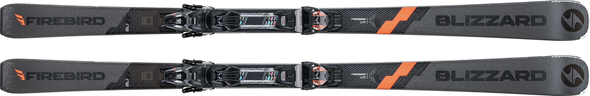
Il Firebird CA prende i migliori sci di Blizzard e distilla la loro essenza in uno sci da pista che è accessibile a tutti. E come ci si può aspettare, etichettare il Firebird CA come uno sci "ricreativo" lo sminuisce un po'; questo sci è superiore al suo peso. Con un'anima completamente in legno e uno strato superiore in carbonio è effettivamente più robusto di alcuni in questa categoria, ma naturalmente è molto meno rigido della maggior parte della gamma Firebird.
The Firebird CA takes Blizzard's top skis and distils their essence into a piste ski that is accessible to all. And as you may expect, labelling the Firebird CA as a 'recreational' ski does somewhat undersell it; this ski punches above its weight. With a full wood core and carbon topsheet it is actually beefier than some in this category, but of course it's way less stiff than most of the Firebird range.
...
Blizzard
2020-2021
https://www.snowmagazine.com/ski-gear/skis/blizzard-firebird-ca
Black Pearl 88→
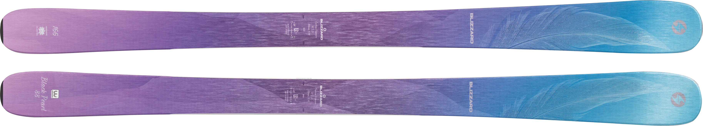
Black Pearl 88, uno dei nostri best-seller, è stato completamente rinnovato per la stagione 2017/18 grazie a una nuova forma che lo rende versatile e ancora più divertente su qualsiasi tipo di pista e con qualsiasi condizione di neve. Grazie al centro da 88 mm e alla costruzione specifica da donna (Carbon Flipcore W.S.D.), Black Pearl 88 regala ottime prestazioni sulla pista battuta, tra gli alberi, sulle gobbe e sulla neve fresca. Struttura leggera, profilo rocker e camber: un’eccellente combinazione di elementi per le sciatrici più aggressive e per quelle che vogliono trovare la sicurezza necessaria ad alzare la posta in gioco. Provare per credere: divertimento assicurato giorno dopo giorno.
Black Pearl 88, one of our best-sellers, has been completely revamped for the 2017/18 season with a new shape that makes it versatile and even more fun on any type of piste and in any snow conditions. Thanks to the 88 mm centre and the women's specific construction (Carbon Flipcore W.S.D.), the Black Pearl 88 delivers great performance on groomed trails, between trees, on moguls and in powder. Lightweight construction, rocker profile and camber: an excellent combination of elements for aggressive female skiers and those who want to find the confidence to up the ante. Try it to believe it: fun guaranteed day after day.
166 cm
Blizzard
2018-2019
http://www.blizzard-ski.com/italia/products/black-pearl-88-2/
Black Pearl 98→
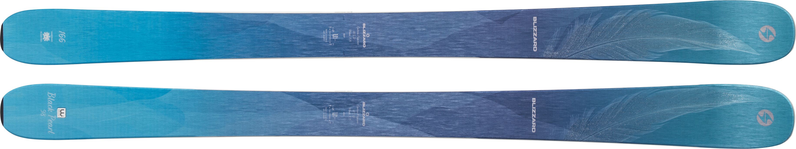
Se sei alla ricerca di uno sci in grado di galleggiare sulla neve fresca è polverosa, destreggiarsi sulla neve rovinata o tracciare curve perfette sulle piste battute, il nuovissimo Black Pearl 98 è lo sci che fa per te. Grazie al centro da 98 mm e il nuovo Carbon Flipcore W.S.D., Black Pearl 98 ora è più leggero e più facile da usare, con versatilità e performance eccezionali su qualsiasi tipo di pista e con qualsiasi condizione di neve.
If you're looking for a ski that can float on powder, maneuver through powder, or carve perfect turns on groomed trails, the all-new Black Pearl 98 is the ski for you. With a 98mm waist and new Carbon Flipcore W.S.D., the Black Pearl 98 is now lighter and easier to use, with exceptional versatility and performance on any type of piste and in any snow conditions.
166 cm
Blizzard
2018-2019
https://www.skiessentials.com/2018-ski-test?skis=blizzard-black-pearl-98
Brahma→
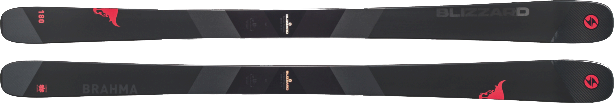
Il nuovissimo Brahma è lo sci da prendere in considerazione nelle giornate in cui le temperature glaciali e l’aria secca rendono la neve molto compatta. La nuova sciancratura e il nuovo profilo rialzato su punta e coda agevolano la sciata, mentre la collaudata tecnologia Carbon Flipcore™ con due strati metallo rende questo sci fluido, aderente sulla neve ghiacciata ed esplosivo sulla neve rovinata. Con un centro da 88 mm, il super versatile Brahma rende divertenti anche le giornate freddissime in cui si battono i denti e la neve è ghiacciata, pur eccellendo anche in condizioni di neve variabile. Uno sci veloce e reattivo, per un divertimento assicurato lungo tutto l’inverno.
The all-new Brahma is the ski to consider on days when freezing temperatures and dry air make the snow very compact. The new sidecut and raised tip and tail profile make it easier to ski, while the proven Carbon Flipcore™ technology with two metal layers makes this ski smooth, grippy on icy snow and explosive on powder. With an 88mm waist, the super versatile Brahma makes even the coldest of days fun when you're chattering your teeth and the snow is icy, while excelling in variable snow conditions. A fast and responsive ski for guaranteed fun all winter long.
180 cm
Blizzard
2018-2019
https://www.onthesnow.com/gear/a/10546/2017-2018-men-s-all-mountain-front-skis/blizzard/brahma-2018
Quattro 6.9 Ti →
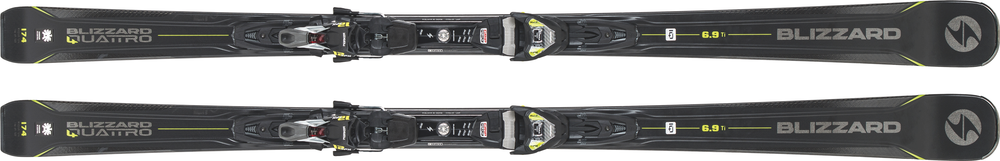
Proprio come le automobili ibride di ultima generazione, il nuovissimo Blizzard Quattro 6.9 Ti offre maggiore potenza e agilità in una costruzione più leggera e più efficiente. I rinforzi in fibra di carbonio nei quattro punti chiave dello sci consentono una presa di spigolo e una stabilità eccezionalmente solide e una maggiore energia in uscita dalla curva. Il centro da 69mm permette di passare da una curva all’altra con estrema facilità e il peso, complessivamente ridotto, vi farà tracciare solchi sempre più profondi senza sentire la fatica. Stringi al massimo le leve degli scarponi e aggancia bene il casco: 6.9 Ti è un generatore di potenza, un’arma in grado di sfidare la gravità, per discese di puro divertimento.
Just like the latest generation of hybrid cars, the all-new Blizzard Quattro 6.9 Ti delivers more power and agility in a lighter, more efficient construction. Carbon fibre reinforcements at the four key points of the ski allow for exceptionally solid edge grip and stability and more energy coming out of turns. The 69mm centre allows you to transition from one turn to the next with ease, and the overall reduced weight will have you carving deeper and deeper grooves without feeling fatigue. Tighten your boot levers to the max and strap on your helmet: the 6.9 Ti is a powerhouse, a gravity-defying weapon for fun descents.
153-160-167-174-181 cm
Blizzard
2018-2019
http://www.blizzard-ski.com/italia/products/blizzard-quattro-69-ti/
Quattro 7.4 Ti→
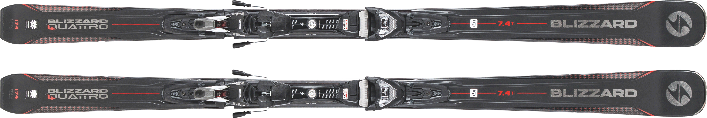
Ci sono giorni in cui ti ritrovi a danzare intorno alla folla di sciatori del fine settimana, altri in cui ti godi la solitudine della prima seggiovia in una mattina qualsiasi: Blizzard Quattro 7.4Ti ti permetterà sempre di fare ciò che vuoi, quando vuoi. Ti permetterà di dipingere la neve come se fosse la tua tela personale. L’ampia zona di contatto con la neve e l’agile centro da 74mm imprimono ad ogni curva la precisione che desideri, mentre la solidità della struttura da competizione offre la presa, la sicurezza e l’energia necessarie a tenere alta l’adrenalina e schivare qualsiasi sciatore sulla tua strada. L’autentica high performance non è mai stata così facile da raggiungere.
There are days when you find yourself dancing around the crowds of weekend skiers, others when you enjoy the solitude of the first chairlift on any given morning: the Blizzard Quattro 7.4 will always let you do what you want, when you want. It will allow you to paint the snow as if it were your own personal canvas. The wide snow contact zone and nimble 74mm waist give every turn the precision you crave, while the solidity of the competition frame gives you the grip, confidence and power to keep your adrenaline pumping and dodge any skier in your way. True high performance has never been easier to achieve.
...
Blizzard
2018-2019
https://www.neveitalia.it/test/sci/2017/blizzard/quattro-74-ti
Quattro 8.0 Ti→
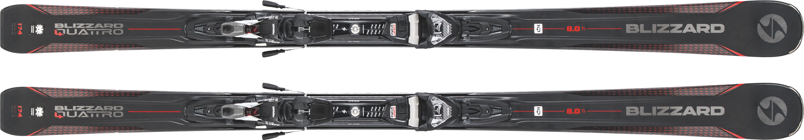
Il Vento Ti Punge La Faccia Mano A Mano Che Aumenti La Velocità E L’adrenalina Aumenta Mano A Mano Che Le Lamine Incidono La Curva. Ti opponi alla forza di gravità, senti gli sci che si flettono sotto i piedi per poi tendersi mentre attraversi la linea di massima pendenza. Blizzard Quattro 8.0Ti è fatto per quel momento, non importa se sotto i piedi ci sia il ghiaccio, una pista rovinata o la neve soffice appena battuta. Il sistema di attacchi IQ di Blizzard conferisce allo sci un’ampia zona di contatto con la neve, riducendo le vibrazioni e massimizzando la performance a qualsiasi velocità. L’anima in legno massello e la costruzione a sandwich Ti garantiscono la potenza e la stabilità tipiche di Blizzard.
The wind stings your face as you increase speed, and the adrenaline increases as the blades cut into the curve. You fight gravity, feel your skis flexing under your feet and then tensing up as you cross the top line. The Blizzard Quattro 8.0Ti is made for that moment, no matter if it's ice, a ruined slope or freshly groomed soft snow underfoot. Blizzard's IQ binding system gives the ski a wide contact zone with the snow, reducing vibration and maximising performance at any speed. The solid wood core and sandwich construction give you the power and stability typical of Blizzard.
174 cm
Blizzard
2018-2019
http://www.blizzard-ski.com/italia/products/blizzard-quattro-80-ti-4/
Quattro RX→
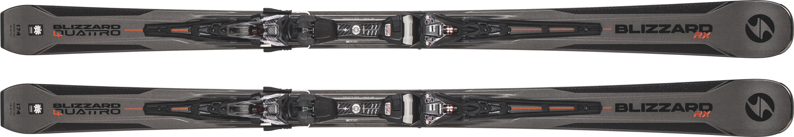
Materiali di qualità e il design Blizzard riconosciuto a livello internazionale: il binomio perfetto per offrire un’esperienza sugli sci unica al mondo con tutti i nuovissimi modelli Blizzard Quattro RX. Specificatamente progettata per potenziare le performance sulle piste appena preparate, la larghezza al centro da 84mm di Blizzard Quattro RX offre galleggiamento e controllo eccezionali, pur consentendo di raggiungere una maggiore inclinazione di spigolo, senza mai perdere aderenza. Il sistema Full Suspension IQ genera una forza costante che spinge verso il basso su punta e coda ed è in grado di assorbire le vibrazioni di ogni gobba incontrata sul tracciato. Per affrontare ogni curva con una sicurezza che non avreste mai creduto di raggiungere.
Quality materials and internationally recognised Blizzard design - the perfect combination to deliver a unique skiing experience with all the latest Blizzard Quattro RX models. Specifically designed to boost performance on freshly groomed pistes, the 84mm waist width of the Blizzard Quattro RX offers exceptional floatation and control, while still allowing you to achieve greater edge angles without losing grip. The Full Suspension IQ system generates a constant force that pushes down on the tip and tail and is able to absorb the vibrations of any hump encountered on the track. So you can take every corner with a confidence you never thought you could have.
167-174-181 cm
Blizzard
2018-2019
http://www.blizzard-ski.com/italia/products/blizzard-quattro-rx/
Samba →
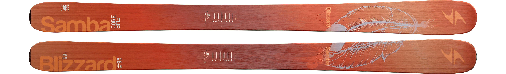
Il Samba fa parte della serie Freeride Donna, che si concentra su sci da montagna più larghi progettati per resistere ben oltre i battipista. La tecnologia Flip Core, in cui il nucleo stesso è costruito con rocker, piuttosto che forzato in una forma rocker durante il pressing, è progettata per provocare una corsa senza vibrazioni. I fianchi in Sandwich Compound Sidewall sono realizzati in plastica resistente, ABS e fenolo, costruiti per mantenere i bordi sicuri e bloccati sulla neve. La tecnologia Light Core combina Isocore, legno di pioppo e bambù per evitare che le anime siano troppo goffe. Infine, un profilo Rocker Camber Rocker presenta un centro camber destinato alle curve in stile gara e una punta e una coda rocker per fluttuare in condizioni diverse.
The Samba is part of the Freeride Women's series, which focuses on wider mountain skis designed to last well beyond groomers. Flip Core technology, in which the core itself is built with rocker, rather than forced into a rocker shape during pressing, is designed to result in a vibration-free ride. Sandwich Compound Sidewalls are made of durable plastic, ABS and phenol, built to keep the edges secure and locked in the snow. Light Core technology combines Isocore, poplar wood and bamboo to keep the cores from being too clunky. Finally, a Camber Rocker profile features a camber centre for race-style turns and a rocker tip and tail for floating in different conditions.
166 cm
Blizzard
2016-2017
https://www.skimag.com/gear/blizzard-samba-2016/
Noleggio
←
X
L’ultimissimo HERO ELITE ST Ti, direttamente ispirato a uno sci da slalom da competizione farà felici gli sciatori tecnici amanti delle gare. La rivoluzionaria tecnologia Line Control abbinata a una larghezza di 68 mm in
corrispondenza
dell’appoggio del piede e a un arco breve rappresentano una garanzia di precisione, potenza e rapidità nel passaggio da spigolo a spigolo. La tecnologia LCT regala allo sci la massima stabilità, consentendo un costante controllo
direzionale unico e una scelta ottimale della traiettoria.
L’ultimissimo HERO ELITE ST Ti, direttamente ispirato a uno sci da slalom da competizione farà felici gli sciatori tecnici amanti delle gare. La rivoluzionaria tecnologia Line Control abbinata a una larghezza di 68 mm in
corrispondenza
dell’appoggio del piede e a un arco breve rappresentano una garanzia di precisione, potenza e rapidità nel passaggio da spigolo a spigolo. La tecnologia LCT regala allo sci la massima stabilità, consentendo un costante controllo
direzionale unico e una scelta ottimale della traiettoria.
| Produttore: | Rossignol |
|---|---|
| Taglie: | Rossignol |
| Versione: | 2018 / 2019 |
TARIFFE 2020/2021 ↧
prenota